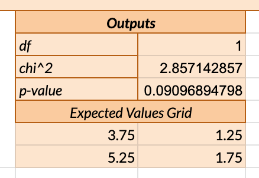
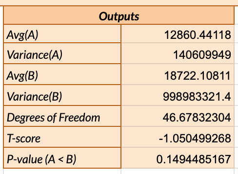
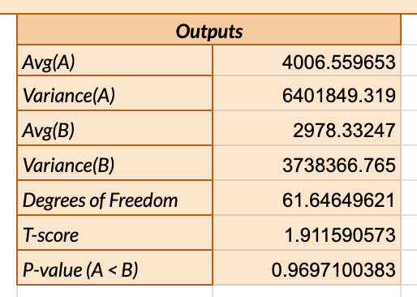

Welcome to Our A/B Test
We conducted an A/B test to see if we could design a webpage that helps users find what they're looking for more quickly. This test compares two versions: the original and a redesigned version focused on improving navigation.
Our Experiment
The experiment involved two versions: Version A (our original page) and Version B (our redesigned page). The goal with Version B was to make it easier for users to find their target quickly. Below is a screenshot of the redesigned site.

Hypotheses and Predictions
Misclick Rate

Null Hypothesis (H0): The misclick rate is the same for both version A and version B of the webpage.
Alternative Hypothesis (H1): Version B of the webpage has a lower misclick rate than version A.
Reasoning: The design changes in version B were intended to make navigation more intuitive, potentially leading to fewer misclicks as users can find their intended targets more easily.
Prediction: We anticipate rejecting the null hypothesis, as the streamlined design of version B should result in a lower rate of misclicks.
Time on Page

Null Hypothesis (H0): There is no difference in the average time spent on the page between versions A and B.
Alternative Hypothesis (H1): Users spend less time on average on version B of the webpage compared to version A.
Reasoning: If version B effectively guides users to their desired actions faster, the average time spent on the page should decrease, reflecting an improvement in usability and efficiency.
Prediction: We are inclined to reject the null hypothesis, expecting that the design improvements in version B lead to a noticeable reduction in time on page.
Mouse Move Distance

Null Hypothesis (H0): The mouse move distance is the same for users interacting with both version A and version B of the webpage.
Alternative Hypothesis (H1): Version B of the webpage results in a lower mouse move distance than version A.
Reasoning: By making the user interface more direct and less cluttered, version B aims to reduce the need for extensive mouse movements, thereby increasing navigation efficiency.
Prediction: We predict rejecting the null hypothesis, as the improvements in version B are expected to significantly decrease the distance users need to move their mouse to find clickable elements.
Statistical Test
Misclick Rate
Test Choice ＆ Why: The Chi-Squared Test was selected to compare the misclick rates between versions A and B. This test is appropriate for categorical data, like our binary misclick outcomes.
- Chi-Squared Statistic: 3.689863013 indicates the observed data's deviation from the expected if no change had occurred. Closer values to 0 would indicate less deviation.
- Degrees of Freedom (df): 1, a function of the number of categories minus one.
- P-value: 0.05474411218, which is slightly above 0.05, suggests that while there is a trend towards improvement in version B, it is not statistically significant at the 5% level.
Conclusion: We fail to reject the null hypothesis, suggesting that the change in misclick rates between versions A and B is not statistically significant.
Time on Page
Test Choice ＆ Why: A One-Tailed T-Test was utilized here to determine if version B significantly reduced the time users spend on the page, aligning with our hypothesis for improved user navigation.
- T-score: -1.050499268, reflecting the direction and magnitude of the difference in means. Negative values indicate version A had higher times on page on average.
- Degrees of Freedom: 46.67832304, calculated from our sample sizes, impacts the critical value needed for significance.
- P-value (A < B): 0.1494485167, suggests that the decrease in time on page for version B is not statistically significant, as it's above our alpha level of 0.05.
Conclusion: We fail to reject the null hypothesis, indicating that version B does not significantly decrease time on page compared to version A.
Mouse Move Distance
Test Choice ＆ Why: The One-Tailed T-Test was appropriate for assessing whether the redesign in version B resulted in a significant reduction in mouse move distance, suggesting more efficient navigation.
- T-score: 1.911590573, which indicates the difference in means is in favor of version B, suggesting reduced mouse movement.
- Degrees of Freedom: 61.64649621, which affects the distribution used to determine the p-value.
- P-value (Adjusted for Direction, A < B): 1−0.9697100383 = 0.0302899617, indicates significant evidence supporting that version B reduces mouse movement compared to version A.
Conclusion: We are confident that the alternative hypothesis is true, providing evidence that version B significantly reduces mouse movement, indicating improved navigation efficiency.
Summary Statistics
Our analysis begins with the careful collection of 34 data points for version A and 37 for version B, setting the stage for a deep dive into how each version impacts user behavior.
The chi-squared test for did_misclick suggested a promising, though not statistically significant, reduction in misclick rates for version B, hinting at a design that may better guide users to their intended targets.
For time on page, the increase from an average of 12,860.44118 milliseconds in version A to 18,722.10811 milliseconds in version B was initially surprising. Given the redesign's aim to expedite user navigation, this outcome suggests a more nuanced impact. While the redesign aimed to help users find their desired clicks faster, the increased time may indicate deeper engagement or content interaction, rather than inefficiency. The absence of statistical significance (p-value: 0.1494485167) means we cannot conclusively say version B affects time on page in the context of our initial goal. However, this invites further investigation into qualitative aspects of user engagement beyond mere speed.
The mouse movement distance saw a significant decrease from 4,006.559653 pixels in version A to 2,978.33247 pixels in version B, with the statistical test indicating a meaningful improvement in navigation efficiency (p-value adjusted for directionality: 0.0303). This aligns with our objective for version B, supporting the hypothesis that the redesign makes it easier for users to locate and interact with key elements on the page.
These statistics not only reflect the outcomes of our hypotheses tests but also tell a story of user interaction that extends beyond the numbers. They illuminate the broader implications of our design changes, revealing the complexity of measuring user experience and the importance of continuously refining our approach based on both quantitative and qualitative feedback.